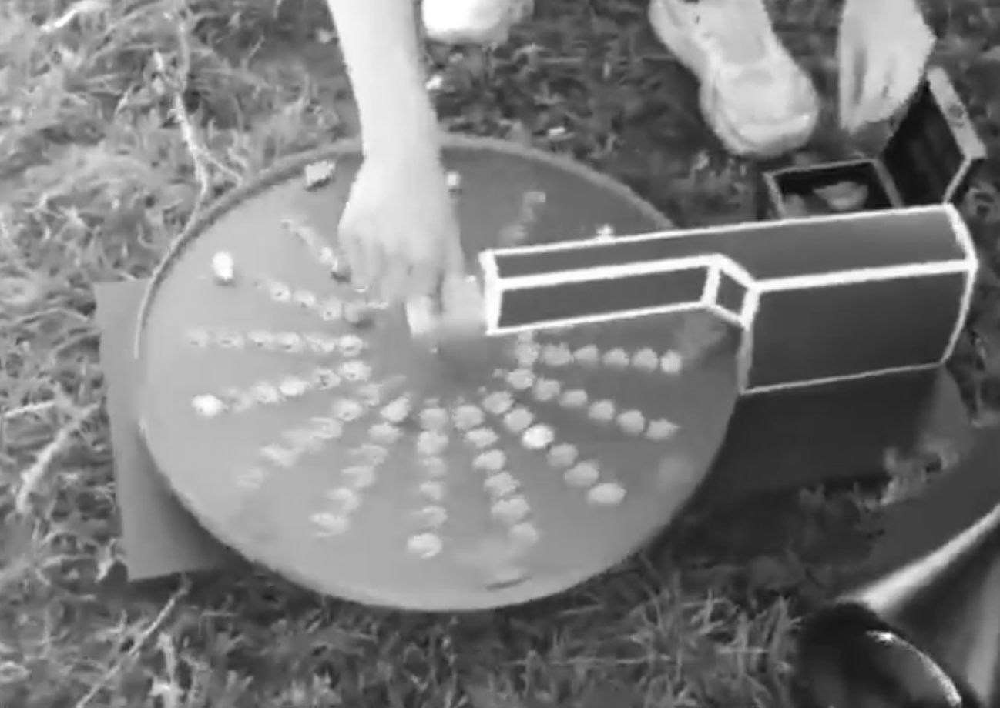

VLADISLAV GENERALOV
klad mineralov

klad mineralov is an interactive sound object. You can use small rocks to create rhythmic patterns and flat rocks to modulate sound parameters of synths and effects.
Technically it is a MIDI sequencer. LDRs + lasers (8 pairs) are used to indicate the presence of rocks in the holes. Infrared sensor is used to scan the surface and color of flat rocks at the edge of the circle.